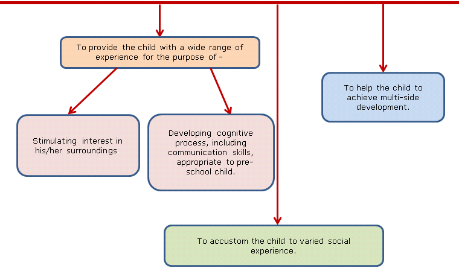

"Kislaya" is a non-profit making enterprise for the service of the children of the campus community of Indian Institute of Technology Kanpur, Kanpur. It was established in 1967 with a vision to provide nursery education to the children of the campus. Its aim is to impart nursery and kindergarten education with the multi-folded objectives like-
In short, its mission is to provide a safe, healthy, nurturing environment which makes every child to feel secure, to learn and to explore.